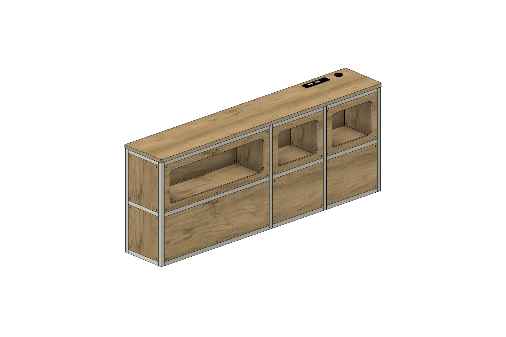
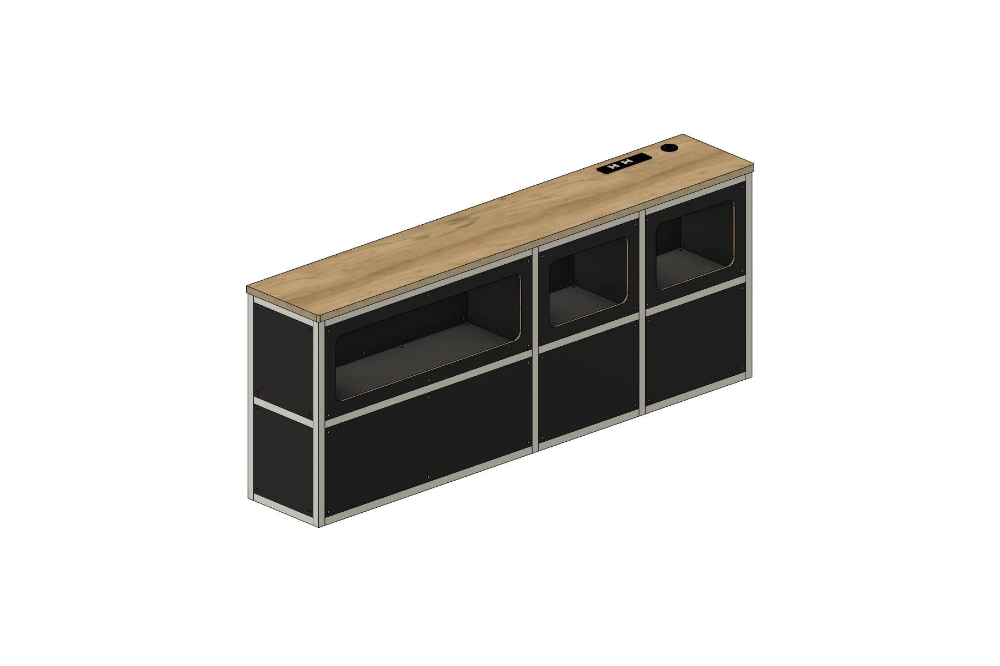
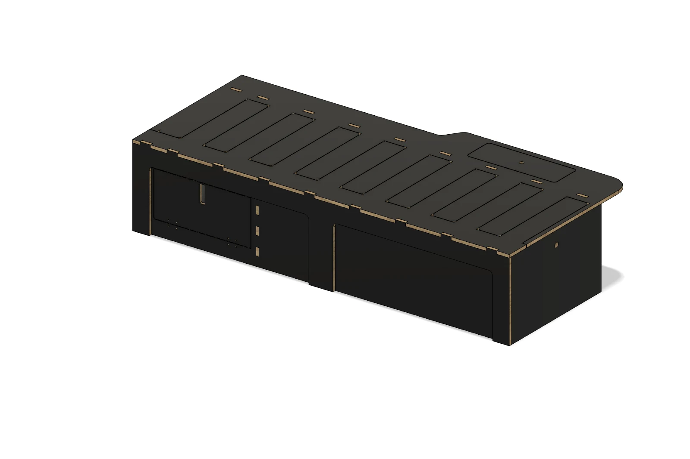
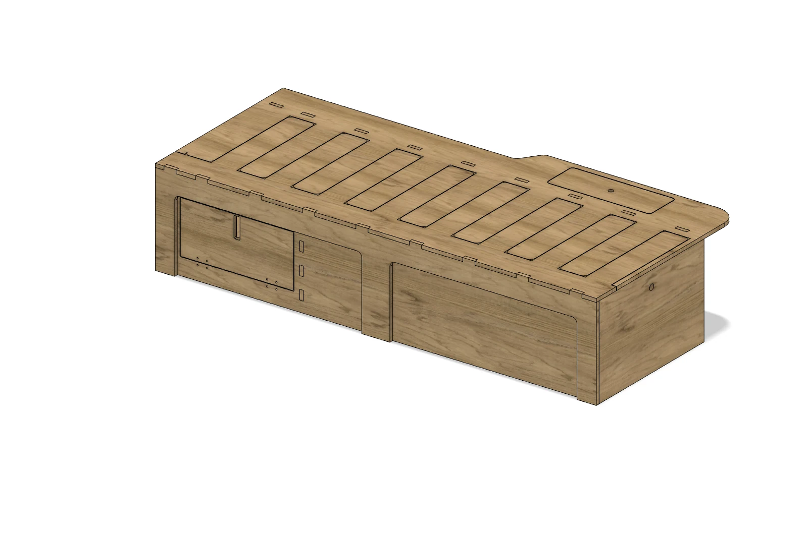
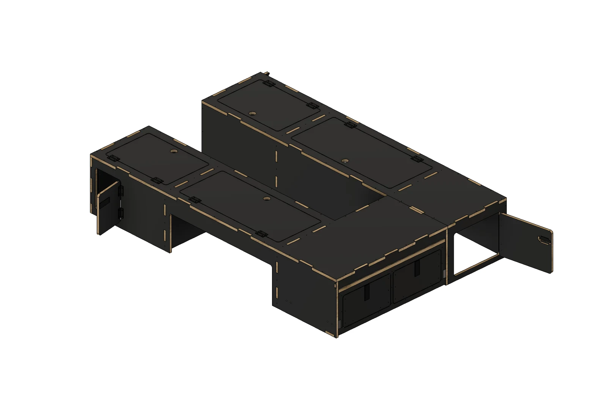
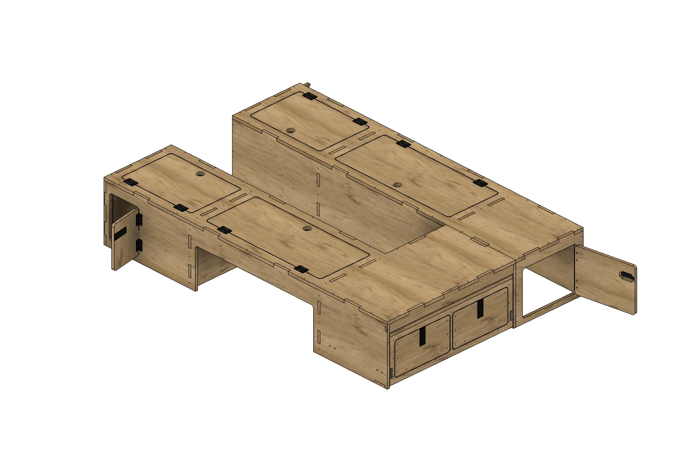

MODULE COLLECTION. YOUR SPACE.
ひとつずつ知る。
空間をつくる。
ベッド、収納、水まわり。
11のモジュールの完成形を、細部と動きからご紹介します。気になるモジュールを選んでご覧ください。
ヘキサ合板 / バーチ合板全11モジュールで選択可能家具天板はALBERO合板（ベッドを除く）
車体を見ながら、前と後ろを組み合わせる。LAYOUT STUDIO →フロントFRONT
 ヘキサ合板
ヘキサ合板 バーチ合板
バーチ合板01 / Front modulePLYWOOD
フロントモジュール ↗
水まわりも、冷蔵庫も、このひとつに。
 バーチ合板
バーチ合板 ヘキサ合板
ヘキサ合板02 / Front moduleALUMINUM
フロントモジュール ↗
収納、水まわり、電源をひとつに。
サイドキャビネットSIDE CABINETS
 ヘキサ合板
ヘキサ合板 バーチ合板
バーチ合板03 / Side cabinet with flip-up tablePLYWOOD
フリップアップテーブル付きサイドキャビネット ↗
起こすと、テーブルになる。
 バーチ合板
バーチ合板 ヘキサ合板
ヘキサ合板04 / Side cabinet with sinkALUMINUM
シンク付きサイドキャビネット ↗
フロントを空けて、水まわりをサイドへ。

バーチ合板
ヘキサ合板05 / Side cabinetALUMINUM
サイドキャビネット ↗
収納と電源を、すっきりひとつに。
 バーチ合板
バーチ合板 ヘキサ合板
ヘキサ合板06 / Side cabinet with fridgeALUMINUM
冷蔵庫付きサイドキャビネット ↗
冷蔵庫をサイドへ。遊びの道具も、ひとまとめに。
片側のベッドSINGLE-SIDE BEDS

ヘキサ合板
バーチ合板07 / Slide-out bed with storagePLYWOOD
収納付きスライドアウトベッド ↗
後ろからも、室内からも、使える収納。
 ヘキサ合板
ヘキサ合板 バーチ合板
バーチ合板08 / Simple slide-out bedPLYWOOD
シンプルスライドアウトベッド ↗
シンプルに収めて、必要なときに広げる。
 バーチ合板
バーチ合板 ヘキサ合板
ヘキサ合板09 / Slide-out bedALUMINUM
スライドアウトベッド ↗
前後に分けて広げる。後ろから引き出す。
フルサイズのベッドFULL-SIZE BEDS

ヘキサ合板
バーチ合板10 / Lounge bedPLYWOOD
ラウンジベッド ↗
くつろぎと、後部の大きな収納。
 ヘキサ合板
ヘキサ合板 バーチ合板
バーチ合板11 / Lounge bed with floor slidePLYWOOD
床スライド付きラウンジベッド ↗
通路から、後ろへ広がる使い方。
気になるモジュールを選んだら、車内レイアウトで組み合わせをご覧ください。